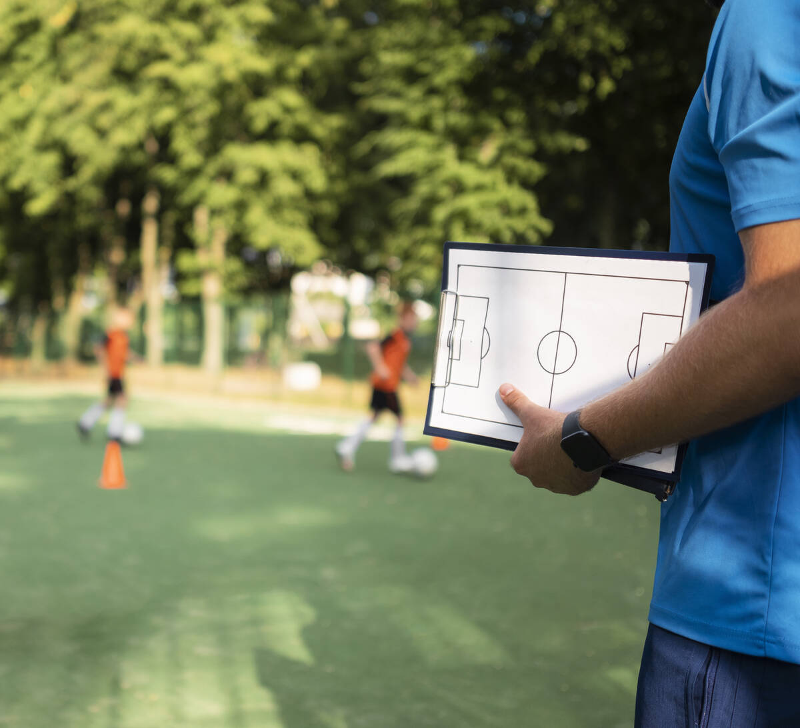
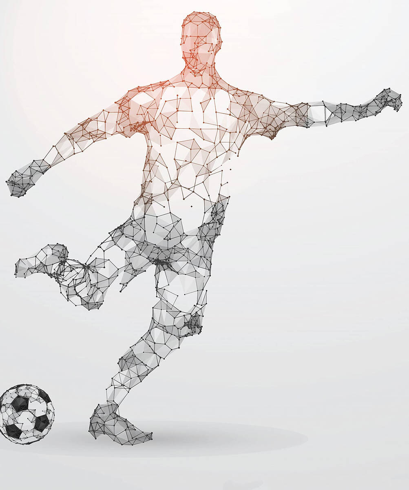

Football club services · Saudi Arabiaخدمات أندية كرة القدم · المملكة العربية السعودية
Building the clubs, and the players, behind Saudi football's next chapter.نبني الأندية واللاعبين لمرحلة جديدة في كرة القدم السعودية.
Mastery Yard Co is a team of specialists and qualified consultants with more than twenty years in the sports and technical management of football clubs.
منظومة متكاملة من المتخصصين والمستشارين المؤهلين بخبرات تمتد لأكثر من عشرين عامًا في الإدارة الرياضية والفنية لأندية كرة القدم.
2034FIFA World Cup in Saudi Arabiaكأس العالم في السعودية
VISION2030
Our vision is inspired by Saudi Vision 2030 and the National Transformation Program: to build a distinguished sports environment by raising the quality of services in the sports sector and reaching new levels of institutional excellence.
نستلهم رؤيتنا من رؤية السعودية 2030 وبرنامج التحول الوطني، لبناء بيئة رياضية مميزة عبر المساهمة في رفع جودة الخدمات المقدمة في القطاع الرياضي، والوصول إلى مستويات جديدة من التميز المؤسسي في قطاع الخدمات الرياضية.
About usمن نحن؟
Specialists in the sports and technical management of football clubsمتخصصون في الإدارة الرياضية والفنية لأندية كرة القدم
We are an integrated team of specialists and qualified consultants with over twenty years of experience in fields related to the sports and technical management of football clubs. We offer distinctive, innovative and comprehensive solutions to serve international football clubs.
منظومة متكاملة من المتخصصين والمستشارين المؤهلين بخبرات ممتدة لأكثر من عشرين عامًا في المجالات المرتبطة بالإدارة الرياضية والفنية لأندية كرة القدم، يقدمون مجموعة من الحلول المميزة والمبتكرة والشاملة لخدمة أندية كرة القدم العالمية.
Our visionرؤيتنا
To be the premier partner for international football clubs in the Kingdom of Saudi Arabia and the Middle East in specialized services for football clubs.
أن نكون الشريك الأول لأندية كرة القدم العالمية في المملكة العربية السعودية والشرق الأوسط في مجال الخدمات المتخصصة لأندية كرة القدم.
Our missionرسالتنا
To develop the football ecosystem for our partners through distinguished and innovative services that contribute to the sustainable growth of clubs and enhance the Kingdom of Saudi Arabia's standing in football.
تطوير منظومة كرة القدم لشركائنا عن طريق تقديم خدمات متميزة ومبتكرة تساهم في تحقيق النمو المستدام للأندية وتعزز مكانة المملكة العربية السعودية في مجال كرة القدم.
Strategic objectivesأهدافنا الاستراتيجية
What we are working towardما نعمل على تحقيقه
Strengthen strategic relationships with international sports institutions.
توطيد العلاقات الاستراتيجية مع مؤسسات كرة القدم العالمية.
Develop integrated services that ensure the sustainable growth of football institutions.
تطوير خدمات متكاملة تضمن النمو المستدام لمؤسسات كرة القدم.
Develop national talent in sports and technical management.
تطوير الكفاءات الوطنية في مجالات الإدارة الرياضية والفنية.
Develop young football talent for professional careers at international clubs.
هندسة المواهب الكروية الشابة للاحتراف في الأندية العالمية.
Build an integrated system that supports Saudi Arabia's ambitions for the 2034 FIFA World Cup.
بناء منظومة متكاملة تساهم في تحقيق تطلعات السعودية لكأس العالم 2034م.
Expand the use of artificial intelligence in sports management systems.
تعزيز استخدام تقنيات الذكاء الاصطناعي في منظومة الإدارة الرياضية.
Areas of specializationمجالات التخصص
From the first scouting report to a professional careerمن اكتشاف الموهبة إلى الاحتراف
We run club operations end to end and follow a player's whole path: we find talent at partner clubs, prepare it through our Talent Engineering Program, and manage the careers that follow.
نقدم خدمات متكاملة للأندية ونرافق اللاعب في مساره كاملًا: نكتشف المواهب في الأندية الشريكة، ونؤهلها عبر برنامج هندسة المواهب الكروية، ثم ندير مسيرتها الاحترافية.
Scoutالاكتشاف→Databaseقاعدة البيانات→Talent Engineeringهندسة المواهب→Career managementإدارة الأعمال

For clubs and academiesللأندية والأكاديميات
Comprehensive Sports and Technical Managementالإدارة الرياضية والفنية الشاملة
Seasonal contracts with football clubs to run sports and technical management for youth teams or academies.
Building the right strategy and organizational structure for the team's sports and technical management.
Governance of the sports management system, policy development and distribution of responsibilities.
Attracting suitable administrative and technical talent.
Promoting teams to higher leagues and winning championships.
التعاقد الموسمي مع أندية كرة القدم لتقديم خدمة الإدارة الرياضية والفنية لفرق الفئات السنية أو الأكاديميات.
بناء الاستراتيجية والهيكل التنظيمي الأنسب للإدارة الرياضية والفنية للفريق.
حوكمة منظومة الإدارة الرياضية وبناء السياسات وتوزيع الصلاحيات.
استقطاب الكفاءات الإدارية والفنية المناسبة.
تصعيد الفرق لدوريات الدرجات الأعلى والفوز بالبطولات.
Africa and the Middle Eastأفريقيا والشرق الأوسط
Talent Scouting and Database Buildingاكتشاف المواهب وبناء قواعد البيانات
Partnering with football clubs in different leagues across target countries in Africa and the Middle East.
Identifying talented players at partner clubs, with a focus on junior and youth age groups.
Analyzing each player's performance and building a full profile of strengths and weaknesses.
Building an integrated database of talented players and their path into the Talent Engineering Program.
التعاقد مع أندية كرة القدم التي تلعب في دوريات مختلفة من عدة دول مستهدفة في أفريقيا والشرق الأوسط.
استكشاف اللاعبين الموهوبين من الأندية الشريكة مع التركيز على الفئات العمرية للناشئين والشباب.
تحليل أداء اللاعبين الموهوبين وبناء ملف متكامل لنقاط القوة والضعف.
بناء قاعدة بيانات متكاملة بمعلومات اللاعبين الموهوبين ومسار انضمامهم لبرنامج هندسة المواهب الكروية.

Our flagship programبرنامجنا الرئيسي
Football Talent Engineering Programبرنامج هندسة المواهب الكروية
Selecting the most prepared players from the database.
Preparing players through personal and group training programs and training camps.
Developing each player across six dimensions.
Friendly matches against clubs of different levels inside the Kingdom to build match readiness.
اختيار اللاعبين الأكثر جاهزية من قاعدة البيانات.
تجهيز اللاعبين عبر برنامج إعداد شخصي وجماعي ومعسكرات تدريبية.
تأهيل اللاعب في ستة أبعاد.
لعب مباريات ودية مع أندية من درجات مختلفة داخل المملكة لرفع مستوى الجاهزية.